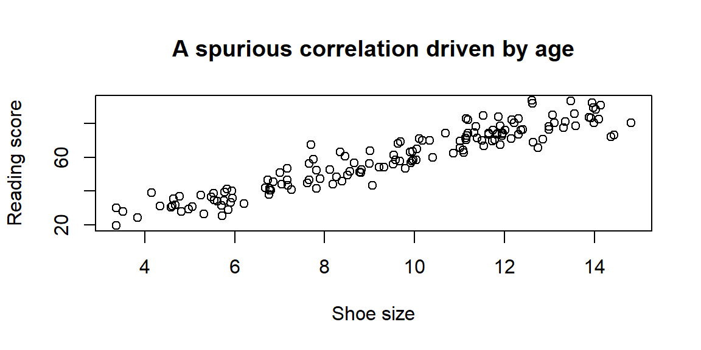
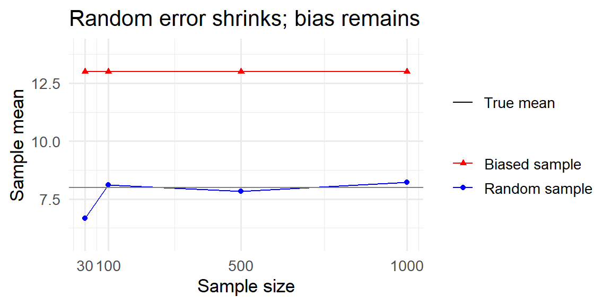
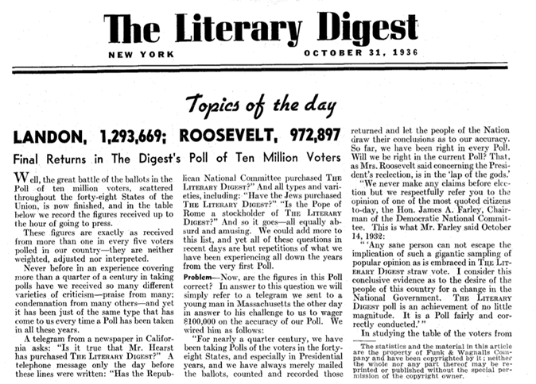
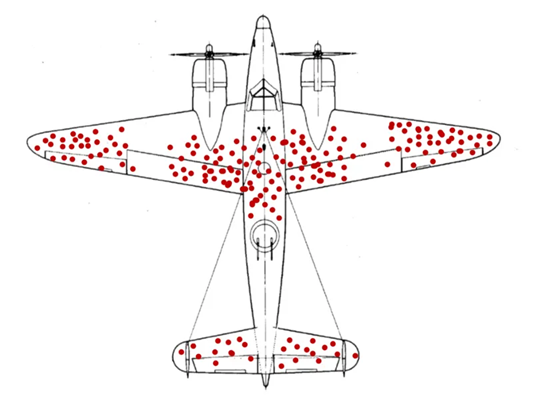

employee_ids <- 1:1000
set.seed(1004)
my_sample <- sample(employee_ids, size = 100)
# First 10 selected IDs
head(my_sample, 10) [1] 395 760 854 673 845 517 272 52 355 298“And I knew exactly what to do. But in a much more real sense, I had no idea what to do.” - Michael Scott
A sample is a subset of a population, but not every subset is equally informative. A representative sample mirrors the key characteristics of the population closely enough that conclusions drawn from the sample match those you would reach by studying the entire population. Designing studies that produce representative samples is central to statistics.
There are two big approaches to sampling:
Whenever you want to generalize, probability sampling is the gold standard.
In a simple random sample (SRS), every individual in the population has an equal probability of being selected, and every possible sample of a given size is equally likely. To carry out an SRS, you need a sampling frame—a complete list of all units in the population—and a random mechanism (such as a random number generator) to choose units.
In practice, sampling is almost always done without replacement so the same unit cannot appear twice. Sampling with replacement is mainly a theoretical concept.
The main advantage of SRS is fairness: purely random selection avoids systematic bias. The main limitations are that it requires a complete sampling frame and can be costly when the population is large or geographically dispersed.
Suppose you want to survey 100 employees of a social media marketing company out of 1,000. You assign each employee a number from 1 to 1,000 and use a random number generator to select 100 distinct numbers. The employees corresponding to those numbers form your sample. Because each employee had an equal chance of being selected, the resulting sample is likely to be representative, especially if the sample size is sufficiently large.
In R, suppose you have the employee IDs stored in a vector. You can draw a simple random sample using sample():
employee_ids <- 1:1000
set.seed(1004)
my_sample <- sample(employee_ids, size = 100)
# First 10 selected IDs
head(my_sample, 10) [1] 395 760 854 673 845 517 272 52 355 298The sample() function draws without replacement by default, so no employee can be selected twice. Changing the size argument lets you adjust the sample size, and changing the seed produces a different (but reproducible) sample.
A university wants to estimate the average number of hours per week that undergraduates spend studying. The registrar has a list of all 12,000 enrolled undergraduates. Each student is assigned an ID number, and a computer randomly selects 400 unique IDs. Those students are contacted and asked to report their weekly study hours. This procedure produces a simple random sample because every student had the same chance of being included.
Systematic sampling is a practical alternative to SRS. You begin with an ordered sampling frame and choose every \(k\)-th unit, where \(k = N/n\) (population size divided by desired sample size). To introduce randomness, you randomly select a starting point between 1 and \(k\), then proceed at fixed intervals.
When the list order is unrelated to the variable being studied, systematic sampling closely approximates SRS and is simpler to implement. However, it carries a risk: periodicity. If the list has a repeating pattern correlated with the outcome, the method can systematically over- or underrepresent certain groups.
All employees of a company are listed in alphabetical order. You want to sample 100 employees from a list of 1,000, so you set \(k = 10\). You randomly select a starting position among the first ten names-say, the 6th person-and then select every 10th person on the list (6, 16, 26, 36, …) until 100 employees are chosen. This approach is easy to carry out and avoids duplicates, but it may be problematic if the alphabetical ordering aligns with job roles, seniority, or family relationships, which could distort the representativeness of the sample.
In stratified sampling, the population is divided into distinct, non-overlapping subgroups called strata based on a relevant characteristic (such as job level, region, or income bracket). A random sample is then drawn within each stratum.
The most common approach is proportional stratified sampling, where each stratum’s share of the sample matches its share of the population. Researchers may also intentionally oversample smaller strata (disproportionate stratified sampling) to ensure enough data for subgroup analysis, adjusting for this later.
Stratified sampling prevents small but important subgroups from being underrepresented and can reduce sampling variability when individuals within a stratum are similar to one another but different across strata. The main drawback is increased complexity: you need reliable information to classify individuals into strata before sampling begins.
A company has 800 junior employees and 200 senior employees. Because job seniority is expected to influence workplace satisfaction, the company divides employees into two strata: junior and senior. To draw a sample of 100 employees that reflects the population structure, the company randomly selects 80 junior employees and 20 senior employees. The resulting sample preserves the original 80/20 split, ensuring that both groups are appropriately represented and that comparisons between junior and senior employees are meaningful.
In R, we can build the sampling frame and sample within each stratum separately:
library(tidyverse)
# Build the sampling frame
employees <- tibble(
id = 1:1000,
level = c(rep("Junior", 800), rep("Senior", 200))
)
# Sample proportionally within each stratum
set.seed(1004)
stratified_sample <- employees |>
group_by(level) |>
slice_sample(prop = 0.10) |>
ungroup()
count(stratified_sample, level)# A tibble: 2 × 2
level n
<chr> <int>
1 Junior 80
2 Senior 20By sampling within each stratum, we guarantee the 80/20 split is preserved regardless of what random numbers are drawn.
Cluster sampling also divides the population into groups, but the logic differs from stratified sampling. Each cluster is intended to be a small-scale version of the entire population—a mini-population containing a diverse mix of individuals. The goal is to reduce cost by studying only a few clusters rather than reaching individuals across many locations.
A random sample of clusters is selected, and data are collected from all individuals within the selected clusters (one-stage) or from a random subset within them (two-stage). This dramatically reduces travel and administrative costs, which is why cluster sampling is common in large-scale surveys.
The main drawback is increased variability. If individuals within a cluster are similar to one another but clusters differ from each other, sampling only a few clusters may miss the full diversity of the population. Cluster sampling often requires a larger total sample size to achieve precision comparable to SRS.
A company operates offices in 10 cities across the country, each employing roughly the same number of workers and performing similar roles. To conduct an employee satisfaction survey, the company randomly selects 3 offices and surveys every employee in those locations. This approach greatly reduces travel and administrative effort. However, it relies on the assumption that offices are reasonably similar; if workplace culture or management practices vary substantially by city, the survey results may be less precise or even misleading.
In R, we randomly select clusters (offices) and then keep all employees within them:
library(tidyverse)
# Sampling frame: 10 offices, ~50 employees each
employees <- tibble(
id = 1:500,
office = rep(paste("Office", 1:10), each = 50)
)
# Randomly select 3 offices
set.seed(1004)
selected_offices <- sample(unique(employees$office), size = 3)
selected_offices[1] "Office 8" "Office 6" "Office 1"# Keep all employees in the selected offices
cluster_sample <- employees |>
filter(office %in% selected_offices)
count(cluster_sample, office)# A tibble: 3 × 2
office n
<chr> <int>
1 Office 1 50
2 Office 6 50
3 Office 8 50Notice the difference from stratified sampling: here we sample clusters (offices) rather than individuals, and then include everyone within the selected clusters.
In some settings, random selection is impossible or impractical. Non-probability sampling methods rely on researcher judgment or participant availability rather than chance. Because individuals do not have known probabilities of selection, these methods cannot guarantee representativeness, so conclusions should be interpreted cautiously. They are most useful for exploratory work, pilot studies, or hard-to-reach populations where constructing a sampling frame is unrealistic.
A convenience sample consists of individuals who are easiest to access—those who are readily available, willing, or nearby. It is inexpensive and fast, but because selection is driven by accessibility, certain groups may be systematically over- or underrepresented. Findings from convenience samples should not be treated as broadly generalizable.
You want to learn about student perceptions of campus support services. After each of your classes, you ask students in the room to complete a short survey. While this approach is quick and easy, it only captures the views of students enrolled in your classes. These students may differ from the broader student body in major, year, motivation, or academic engagement, so the resulting sample is not representative of all students at the university.
A voluntary response sample is formed when individuals choose for themselves whether to participate—such as open online polls or public feedback forms. The key issue is self-selection bias: people with strong opinions are much more likely to respond than those who are indifferent, so the results tend to exaggerate extremes. Voluntary response samples are useful for gathering feedback but inappropriate for drawing population-level conclusions.
You email a survey to the entire student body asking for opinions about a new campus policy. Only a small fraction of students respond, and those responses come primarily from students who are either strongly supportive or strongly opposed. Students with neutral or mildly held views are far less likely to participate, so the results cannot be trusted to represent the typical student’s perspective.
In purposive sampling, participants are deliberately selected because they possess characteristics or knowledge especially relevant to the research question. The goal is to obtain information-rich cases rather than a representative cross-section. This method is common in qualitative research and case studies. The main limitation is that selection is subjective, so the results cannot support population-level inference.
A consulting firm wants to understand why some small businesses thrive after a recession while others fail. They intentionally select business owners from different industries, regions, and revenue levels to capture a range of experiences. This allows them to identify common success factors, but it does not allow them to estimate what proportion of all small businesses share those experiences.
Snowball sampling is a recruitment method in which existing participants refer others who meet the study criteria. The sample grows through social connections, much like a snowball rolling downhill. It is especially useful for hard-to-reach populations where traditional sampling frames do not exist. However, because referrals occur within social networks, the sample may overrepresent well-connected individuals and underrepresent others.
A researcher studying freelance gig workers begins by interviewing one participant found through an online forum. That participant introduces the researcher to others in their network, and those participants provide additional referrals. While this approach reaches a population with no central roster, the resulting sample may reflect a narrow subset of experiences shaped by shared social connections.
| Keyword | Definition |
|---|---|
| Representative sample | A sample that accurately reflects key characteristics of the population. |
| Probability sampling | Sampling technique using random selection so each unit has a known chance of inclusion. |
| Non-probability sampling | Sampling techniques based on convenience or judgement without randomisation. |
| Simple random sampling | Every unit has an equal chance of selection; implemented via random number generators. |
| Systematic sampling | Selecting every \(k\)-th unit from an ordered list after a random start. |
| Stratified sampling | Dividing the population into subgroups and randomly sampling within each subgroup. |
| Cluster sampling | Randomly selecting entire groups (clusters) and studying all units within them. |
| Convenience sampling | Including the most accessible units; prone to sampling and selection bias. |
| Voluntary response | Sampling based on participants who choose to respond, often those with strong opinions. |
| Purposive sampling | Selecting cases based on researcher judgement of what is most informative. |
| Snowball sampling | Recruiting participants via referrals from initial subjects, often for hidden populations. |
You want to estimate the average GPA of all first-year students at your university.
A researcher selects every 5th name from a sorted list of customers to survey. What sampling method is this? Under what circumstance might this method introduce bias?
Compare stratified sampling and cluster sampling. Give an example of a scenario where each would be appropriate.
Explain why voluntary response samples often yield extreme views and cannot be trusted for generalizing to a population.
(a)Simple random sampling (assign each first-year student a number and randomly select using a random number generator); stratified sampling (divide students by major or residence hall and sample proportionally within each group). (b) Your friends are likely from similar classes or social circles, so they may have similar study habits; they might not reflect the broader student body.
This is systematic sampling. It works well if the list has no pattern related to the outcome. If customers are sorted by account type, every 5th customer might always be from the same tier, which could bias results if tiers differ meaningfully.
Stratified sampling divides the population into meaningful groups and samples within each (e.g., sampling men and women separately when studying height). It ensures each subgroup is represented. Cluster sampling selects whole groups (e.g., choosing three hospitals at random and surveying all nurses within them) to save cost when the population is geographically spread out.
People with strong positive or negative feelings are more likely to volunteer, while those who are neutral remain silent. This self-selection skews the sample, so the responses do not reflect the average opinion in the population.
“All life is an experiment. The more experiments you make the better.” -Ralph Waldo Emerson
Statistics provides two complementary approaches for gathering evidence: surveys and experiments. In a survey, we select individuals from a population and collect information. In an experiment, we actively assign treatments to units and observe their responses. In both cases, sound inference depends on thoughtful sampling and careful study design.
The goal of an experiment is to isolate the causal effect of a treatment by controlling other sources of variation. Well-designed experiments rely on four core principles.
Randomization is the foundation of experimental design. Assigning units to treatment conditions by chance ensures that, on average, groups are similar on both observed and unobserved characteristics. This allows differences in outcomes to be interpreted as causal effects rather than artifacts of preexisting differences.
In a completely randomized design, each unit is assigned to a treatment independently. For example, customers might be randomly assigned to see one of two website layouts. This approach is simple and effective when units are fairly homogeneous.
In a randomized block design, units are first grouped into blocks based on a characteristic known to influence the response, and treatments are randomly assigned within each block. For instance, stores might be blocked by region before assigning different promotional strategies. Blocking removes predictable variation, allowing randomization to work more efficiently within each group.
Randomization also applies to the order of experimental runs. In manufacturing or testing settings, randomizing the run order prevents time-related factors—such as equipment warming or operator fatigue—from becoming confounded with treatment effects.
A company wants to compare two training programs (A and B) for new hires. They randomly assign 10 of 20 new employees to Program A and the remaining 10 to Program B. Differences in prior experience, education, or aptitude are spread randomly across the two groups, preventing these factors from systematically favoring one program.
A well-designed experiment includes a meaningful comparison, typically between a treatment group and a control group. The control group provides a baseline against which the treatment effect is measured. The control may receive no treatment, the current standard, or a placebo—something designed to mimic the experience of receiving the intervention without the active component.
Placebo controls matter because participants’ expectations alone can influence outcomes—a phenomenon called the placebo effect. By giving both groups identical experiences except for the active component, researchers can attribute differences in outcomes specifically to the treatment.
Replication means applying each treatment to multiple units. Because outcomes naturally vary, replication lets us estimate the amount of random noise and determine whether observed differences are larger than we would expect by chance. A single observation per treatment cannot distinguish a real effect from an unusual outcome.
Measuring battery life under a specific charging condition using several batteries gives a far more reliable estimate than testing just one battery, which might be unusually good or unusually poor.
Blocking is used when a nuisance variable—one that is not of primary interest but is known to affect the response—can be identified in advance. Units are grouped into homogeneous blocks based on this variable, and treatments are randomized within each block.
Blocking reduces unexplained variability, leading to more precise estimates without increasing sample size. Natural blocking structures arise often: retail stores might be blocked by sales volume tier, manufacturing runs by shift, or survey respondents by age group.
Strong designs typically combine these principles. For example, a retail chain testing a new store layout might block stores by sales volume, randomly assign layouts within each block, and replicate the test across multiple weeks.
Experiments also differ in structure. In between-subjects designs, each unit receives exactly one treatment. In within-subjects (or repeated-measures) designs, each unit experiences all treatments, usually in a randomized order. Within-subjects designs reduce variability by letting each unit serve as its own control, but they require attention to order effects such as learning or fatigue.
High-quality surveys require care in two areas: how respondents are selected (see sec-sampling_methods) and how questions are written. Even a perfectly representative sample can produce misleading results if the questions are biased or confusing. Below are common pitfalls in survey question design.
Leading questions subtly (or not so subtly) push respondents toward a particular answer by framing one response as more reasonable, popular, or desirable than others. This can inflate support for a policy, product, or opinion simply through wording rather than genuine sentiment.
Biased:
“Don’t you agree that our new app is much easier to use?”
This wording assumes agreement and pressures respondents to conform.
Unbiased:
“How would you rate the ease of use of our new app?”
Another example: Biased: “Most students think this course is well organized. Do you agree?” Unbiased: “How would you rate the organization of this course?”
Loaded questions embed an assumption, often a controversial or emotionally charged one, into the question itself. Respondents are forced to accept the premise in order to answer, even if they disagree with it.
Biased:
“When did you stop wasting time on your phone?”
This question assumes the respondent wastes time on their phone and that they have already stopped.
Unbiased:
“How much time do you spend on your phone each day for non-work activities?”
Another example: Biased: “Why do you support unfair tuition increases?” Unbiased: “What is your opinion on recent tuition increases?”
Double-barreled questions ask about two (or more) distinct issues but allow only a single response. Because respondents may have different opinions about each component, the resulting data are ambiguous and difficult-or impossible-to interpret.
Biased:
“Do you intend to leave work and return to full-time study this year?”
A respondent might plan to leave work but not return to school, or vice versa.
Unbiased:
“Do you intend to leave your current job this year?” “Do you intend to return to full-time study this year?”
Another example: Biased: “How would you rate our products and level of service?” Unbiased: “How would you rate the quality of our products?” “How would you rate the quality of our customer service?”
Ambiguous wording occurs when a question uses vague terms or phrases that different respondents may interpret differently. When this happens, people may answer different questions even though they are responding to the same survey item.
Biased:
“How do we compare to our competitors?”
Respondents may interpret this as referring to price, quality, customer service, innovation, or brand reputation.
Unbiased:
“Compared to our competitors, how would you rate our prices?” “Compared to our competitors, how would you rate our customer service?”
Another example: Biased: “How often do you exercise regularly?” Unbiased: “On how many days per week do you engage in at least 30 minutes of physical activity?”
Poorly worded questions introduce bias just as surely as a flawed sampling method. To craft effective questions, follow these key principles:
Use neutral language. Avoid emotionally charged words or implied “correct” answers. Describing a policy as “beneficial” or “harmful” nudges responses before the respondent even considers the question.
Be specific and clear. Define key concepts and specify time frames. Instead of “How often do you use the library?” ask “How many times have you visited the library in the past month?”
Ask one thing at a time. Each item should measure a single concept. If a question combines two ideas, respondents who agree with one but not the other cannot answer accurately.
Balance response options. Scales should be symmetrical (e.g., a 5-point Likert scale from “Strongly disagree” to “Strongly agree”). Unbalanced scales push respondents toward certain answers.
Pilot test your survey. Testing with a small group reveals ambiguous wording and unintended interpretations that are not obvious to the designer.
| Term | Definition |
|---|---|
| Random assignment | Assigning sampled units to treatment conditions by chance to create comparable groups. |
| Treatment group / control group | Groups receiving the experimental intervention and baseline comparison, respectively. |
| Placebo | An inert treatment used to mimic the experience of the intervention to control for expectations. |
| Replication | Repeating the same treatment on multiple experimental units to estimate variability. |
| Blocking | Grouping similar units and randomizing within each group to control a nuisance factor. |
| Between-subjects design | Each unit experiences only one condition; comparisons are across subjects. |
| Within-subjects design | Each unit experiences all conditions in random order. |
| Leading question | A survey question that suggests a particular answer. |
| Loaded question | A survey question containing an assumption or implication. |
| Double-barreled question | A single question that asks about two things. |
| Ambiguous wording | Vague terms that can be interpreted differently by different respondents. |
Random sampling determines who gets into the study. Every member of the population has a known chance of selection, improving generalizability. Random assignment determines which condition participants experience, creating comparable groups and allowing causal conclusions. Surveys rely on random sampling; experiments rely on random assignment.
Randomization: assign units by chance (e.g., randomly assign stores to different display layouts). Control/placebo: include a baseline condition to isolate the treatment effect. Replication: repeat treatments on multiple units, like testing several batteries under the same condition. Blocking: group units by a nuisance factor (e.g., store size) and randomize within blocks.
The question is double-barreled-it asks about cost and quality. Rewrite as two separate questions (e.g., “How satisfied are you with the cost of your textbooks?” and “How satisfied are you with the quality of your textbooks?”).
Volunteers may differ systematically from non-volunteers (e.g., motivation or prior GPA). Random assignment is missing. To infer causality, randomly assign students to tutoring or control groups and compare outcomes, possibly blocking on prior GPA.
“You can observe a lot by just watching.” - Yogi Berra
How you gather data matters tremendously for what you can conclude.
In an observational study, researchers record what happens without assigning treatments. Common types include:
In a cohort study, a group sharing a characteristic is followed over time, and researchers compare outcomes between those exposed to some factor and those not exposed.
For example, a business school might track a cohort of MBA graduates from the class of 2020, following their career trajectories over 10 years. Researchers could compare salary growth, promotion rates, and job satisfaction between graduates who took on student debt and those who did not. By following the same group over time, the study can reveal long-term patterns—but it cannot prove that debt caused any differences, because the two groups may differ in other ways (family wealth, risk tolerance, chosen industry).
In a case–control study, individuals with a particular outcome (“cases”) are compared to similar individuals without it (“controls”) to look for differences in past exposures.
For example, a bank might compare 200 loans that defaulted (cases) with 800 similar loans that were repaid on time (controls) to investigate whether certain application characteristics, such as debt-to-income ratio or employment length, were more common among defaults.
Because participants choose their own behaviors, observational data reflect the real world and are often the only practical way to study outcomes that cannot be ethically or feasibly assigned. Observational studies are usually quicker and cheaper than experiments, but they have a critical limitation: you cannot be sure whether differences in outcomes are caused by the factor of interest or by other variables that differ between groups.
As discussed previously, in an experiment, researchers assign treatments to units and observe the effects. Randomization ensures that, on average, groups are comparable on both observed and unobserved characteristics. Experiments are the gold standard for establishing causality, but they can be expensive, time-consuming, or impractical.
For example, suppose a company suspects that employees who work remotely are more productive than those in the office. An ideal experiment might randomly assign half the workforce to remote work and the other half to in-office work for five years. But this raises practical problems:
In cases like this, an observational study—comparing employees who already work remotely to those who already work in the office—is more practical, even though it cannot fully establish causality.
Observational data are susceptible to confounding—a situation where a third factor influences both the exposure and the outcome, creating a spurious association. For example, a company might observe that employees who use standing desks take fewer sick days. But employees who request standing desks may also be more health-conscious overall, so the benefit might come from their lifestyle rather than the desk itself.
Randomization is the only method that can eliminate confounders by balancing both measured and unmeasured factors across groups. In observational research, statistical adjustments (stratification, regression, propensity score matching) can reduce bias, but they depend on the assumption that all important confounders have been measured correctly. Because unmeasured confounders may remain, observational evidence alone cannot support conclusions of causation.
Below is a simple simulation illustrating confounding. Shoe size and reading ability appear positively related, but both are driven by age. When age is not controlled, a misleading association emerges.

The scatterplot shows a strong correlation between shoe size and reading, even though neither directly affects the other. The common cause is age. Observational studies must always consider whether a hidden variable like age could be responsible for an observed association.
| Term | Definition |
|---|---|
| Observational study | A study in which researchers record exposures and outcomes without assigning treatments or interventions. |
| Cohort study | Observational design where a group is followed over time to compare outcomes between exposed and unexposed members. |
| Case–control study | Observational design where people with a condition (“cases”) are compared to similar people without the condition (“controls”) to look for differences in past exposures. |
| Experiment | A study where researchers introduce an intervention and randomly assign subjects to treatment or control groups. |
| Confounding | A situation where a third factor influences both the exposure and the outcome, potentially creating a spurious association. |
A consulting firm finds that companies using agile project management have higher revenue growth than companies using traditional methods.
In a randomized trial, half of a retailer’s stores are assigned to use a new checkout system and the other half keep the current system. After six months, the new system shows shorter wait times. Explain why randomization strengthens the causal interpretation.
A study finds that employees who participate in company wellness programs have lower absenteeism than those who do not. Suggest two reasons why this association may not reflect a causal effect of the program.
Describe a research question that would be impractical to answer via experiment but could be studied observationally. Explain why.
Randomization assigns the checkout system by chance, so, on average, both known and unknown factors (store size, location, customer demographics) are balanced across groups. Therefore, differences in wait times are likely due to the system rather than pre-existing differences.
Employees who join wellness programs may already be healthier or more motivated; they may also hold positions with more schedule flexibility. These confounders could explain the lower absenteeism rather than the program itself.
Studying whether long commute times reduce employee retention would be impractical to test experimentally—you cannot randomly assign commute distances. Instead, researchers can observe employees with different commute lengths and compare turnover rates over time.
“Normally if given a choice between doing something and nothing, I’d choose to do nothing. But I would do something if it helps someone do nothing. I’d work all night if it meant nothing got done.” - Ron Swanson
Bias is a systematic error built into the way we select or measure data. Unlike sampling error—which shrinks as the sample grows—bias does not go away with bigger samples. A flawed design simply produces more confident wrong answers.
Sampling error is the natural variability in statistics from one sample to the next. Larger samples reduce it. Bias, by contrast, is a consistent push in one direction caused by how data are collected or measured. A biased sample can be huge and still be wrong because the error is baked into the design.
To illustrate the difference, imagine a population with a true average income of $8 (in arbitrary units), made up of 70% low earners (income of 5) and 30% high earners (income of 15). Below we simulate two ways of sampling from this population: a fair simple random sample and a biased sample that over-selects high earners (80% high, 20% low). As the sample size grows, the random sample mean settles near the true average, while the biased sample mean stays high. This shows that increasing the sample size reduces random error but does not fix bias.

Bias can enter at many points in the data-collection process. Here are some of the most common culprits:
Coverage bias occurs when some members of the population are missing from the sampling frame. The Literary Digest’s famous 1936 presidential poll relied on telephone directories and car registration lists, thereby missing less affluent voters who tended to support Franklin Roosevelt. The sample favored wealthier respondents and badly mispredicted the election.

Nonresponse bias arises when selected individuals choose not to participate and responders differ systematically from nonresponders. In the same 1936 survey only 25% of those sampled returned the mail-in ballot. Landon supporters were more likely to return the survey, so the results overestimated his popularity.
When people opt into a survey on their own—like online product reviews or call-in polls—the sample disproportionately includes those with strong opinions. Voluntary response bias produces extreme results because moderate voices remain silent.
A convenience sample chooses whoever is easiest to reach. If you stand outside a gym to survey “all adults in the city,” your sample will overrepresent health-conscious people. Convenience sampling often leads to coverage problems.
Response bias occurs when the measurement process influences the answer: leading questions, unbalanced scales, or social pressure can nudge respondents. Social desirability bias occurs when people overreport virtuous behaviors or underreport undesirable ones.
When we only observe “survivors” and ignore those that dropped out or failed, we can mistake success for the rule.

The classic example is the WWII bomber problem. Analysts tallied bullet holes on returning bombers and saw clusters on wings and fuselage, with few near engines. The intuitive fix was to armor the damaged areas. Statistician Abraham Wald pointed out the trap: these data come only from planes that survived. The missing planes were likely hit in the areas with no holes. Wald recommended reinforcing the areas with the fewest holes on survivors.
The same logic applies in business. Studying only successful startups to find the “keys to success” ignores all the companies that did the same things and failed.
In retrospective studies, participants may not remember past events accurately. For example, customers who had a negative experience may recall details differently than satisfied customers, leading to systematic differences.
The interviewer’s tone, appearance or expectations can subtly influence responses. Neutral wording and training can reduce this effect.
People who remain in a study for its full duration often differ from those who drop out. In a year-long customer loyalty study, customers who leave early may be the least satisfied, so the remaining sample paints an overly positive picture.
Each of these biases stems from the way participants are chosen or how data are measured; they cannot be “averaged out” by larger samples.
To minimize bias:
| Term | Definition |
|---|---|
| Coverage bias | Systematic error that arises when part of the population is missing from the sampling frame. |
| Nonresponse bias | Bias introduced when individuals who do not respond differ meaningfully from those who do respond. |
| Voluntary response bias | Bias caused by allowing people to opt into a survey; respondents with strong opinions dominate the sample. |
| Response bias | Bias that arises from flaws in the measurement process, such as leading questions or social desirability. |
| Sampling error | Natural variability in statistics from sample to sample; decreases with larger samples. |
| Bias | Systematic error due to design or measurement; does not diminish with larger samples. |
| Survivorship bias | Focusing only on observed “survivors” and ignoring those that failed, leading to overly optimistic conclusions. |
A tech company sends an email survey to customers using its premium service. Over half of the recipients do not respond. The company concludes that 85 % of its customers are satisfied.
A political action group hosts an online poll on its website asking visitors whether they support a proposed tax increase. Seventy-five percent say “no.” What type of bias is most likely, and why does this poll not reflect general public opinion?
Suppose you draw a simple random sample of 1,000 Baylor students from a roster and send them a questionnaire. Only 200 students respond. How could you use follow-ups or weighting to reduce bias? Explain your reasoning.
Explain the difference between sampling error and bias in your own words. Why can a huge sample still give a wrong answer?
(a)Coverage bias and nonresponse bias. The company sampled only premium users (ignoring basic or free users) and most of the sampled customers did not respond, so respondents may differ from nonrespondents. (b) To reduce coverage bias, draw a sample from all customers or weight responses to reflect the full user base. To reduce nonresponse bias, send reminders, offer incentives or provide alternative modes (e.g., phone, mail).
This is voluntary response bias: only visitors who care enough to vote participate, and they may have strong opinions. A poll embedded on a partisan website cannot be generalized because participants are self-selected and not representative of the broader population.
The low response rate introduces nonresponse bias. You could send follow-up reminders, offer incentives, or contact nonrespondents by phone to increase participation. If demographic data are available for all sampled students, you can apply weights so that the 200 responders reflect the distribution of the 1,000 sampled students (and thus the target population).
Sampling error is the random fluctuation you see from one sample to the next; it decreases with larger samples. Bias is a systematic error built into the design or measurement; it doesn’t shrink with bigger samples. A huge convenience or volunteer sample can still give a wrong answer if it systematically excludes part of the population or asks questions in a biased way.